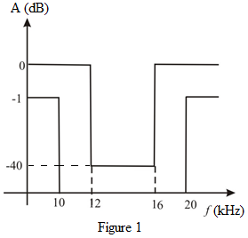

The band-stop filter is required to pass signals over the band  and with
and with
The stop band extends from with a minimum attenuation of 40 dB.
The band-stop filter is required to pass signals over the band and with
The stop band extends from with a minimum attenuation of 40 dB.
The sketch of transmission specifications for a band-stop filter is shown in Figure 1.
